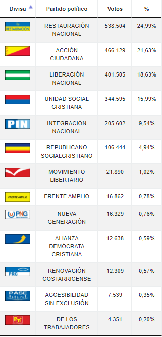
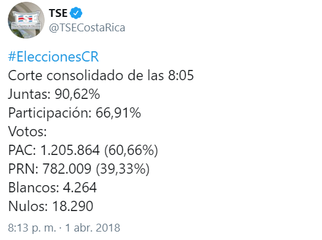

Primer encuesta
En este participaron los dos candidatos más votados: el diputado, periodista y cantante cristiano Fabricio Alvarado Muñoz del partido conservador Restauración Nacional; y el escritor, politólogo, periodista y exministro Carlos Alvarado Quesada del socialdemócrata Partido Acción Ciudadana con 24,91 % y 21,66 % respectivamente. A estos le siguieron Antonio Álvarez Desanti de Liberación Nacional con 18,62 %, Rodolfo Piza Rocafort de la Unidad Social Cristiana con 16,02 %, Juan Diego Castro Fernández de Integración Nacional con 9,52 % y Rodolfo Hernández Goméz del Republicano Socialcristiano con 4,95 %.
Segunda encuesta
La segunda ronda fue ganada por Carlos Alvarado, quien logró acuñar el 60% de los votos por sobre su rival Fabricio Alvarado que obtuvo 39%. Es la primera vez en la historia de Costa Rica que el candidato que quedó de segundo en la primera vuelta gana el balotaje, además de ser la primera vez que el abstencionismo se reduce con respecto a los resultados de la primera ronda. Por segunda ocasión, un candidato obtuvo más de un millón de votos en la segunda ronda, siendo la primera el cuatrenio anterior con Luis Guillermo Solís del mismo partido.
| Bandera | Candidato | Toca aqui para ver los resultados de la primer encuesta | Toca aqui para ver los resultados de la segunda encuesta |
|---|---|---|---|
 |
Carlos Alvarado Quesada | ||
 |
Juan Diego Castro Fernandez | ||
 |
Rodolfo Piza Rocafort | ||
 |
Fabricio Alvarado Munoz |